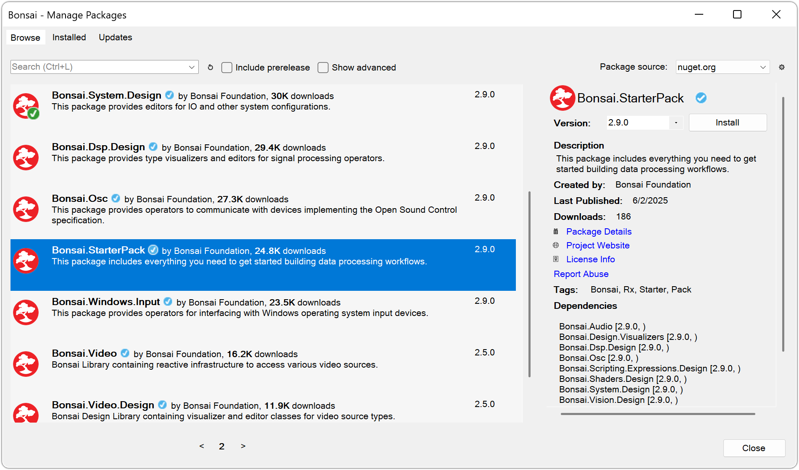

Package Manager
Bonsai can be extended by installing software packages containing operators designed for specific tasks, such as video processing or OpenGL shaders.
Install dependencies
When you first run Bonsai, any required packages will be automatically installed. The built-in package manager can then be launched from the start screen to further customize your installation by selecting the option Manage packages.
Packages that are already installed are displayed with a green tick mark to the right of the title. You can install new packages by selecting a package title or description and then clicking on the Install button that appears on the right. You can also search for available packages using the text box in the upper-left corner.
Note
If you want to start playing with Bonsai quickly, just download the "Starter Pack" package. This will automatically install all major dependencies used in this guide.
In the Installed tab you can browse currently installed packages and optionally uninstall them. The Updates tab will show you which of those packages can be updated to a newer version.
Configure package sources
The Settings button in the upper-right corner () will open a new dialog where you can configure the active package sources. This allows you to specify directly where Bonsai should look for new packages, either online or in your local file system.
Tip
Most of the available Bonsai packages can be found in the official package source. However, at some point you may want to install your own custom packages, or packages that were shared with you by other means. See the Extending Bonsai section for detailed instructions on how to configure local package sources.
When you are done managing your packages, you can click the Close button or hit the Escape key to exit the package manager.